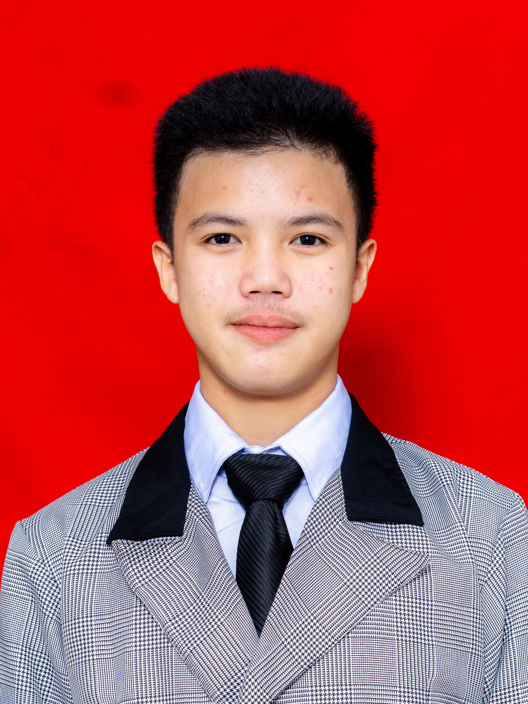

Saya merupakan siswa SMK Wikrama jurusan PPLG (Pengembangan Perangkat Lunak dan Gim) yang memiliki ketertarikan besar terhadap dunia teknologi, khususnya dalam pengembangan perangkat lunak dan aplikasi. Saya terbiasa berpikir secara logis, teliti, dan kreatif dalam mengerjakan proyek, baik secara individu maupun tim, serta mampu mencari solusi atas berbagai permasalahan yang dihadapi. Selain berfokus pada bidang akademik, saya juga aktif mengikuti kegiatan Paskibra yang membentuk kedisiplinan, rasa tanggung jawab, serta jiwa kepemimpinan. Melalui kegiatan ini, saya belajar bekerja sama, menjaga konsistensi, dan menghargai proses. Di samping itu, saya menekuni Taekwondo sebagai sarana untuk melatih mental yang kuat, sportivitas, pengendalian diri, serta ketahanan fisik. Dengan perpaduan kemampuan di bidang IT, pengalaman organisasi, dan aktivitas olahraga, saya berusaha menjadi pribadi yang disiplin, adaptif, dan siap menghadapi tantangan, baik di lingkungan sekolah maupun saat memasuki dunia kerja dan industri di masa depan.
